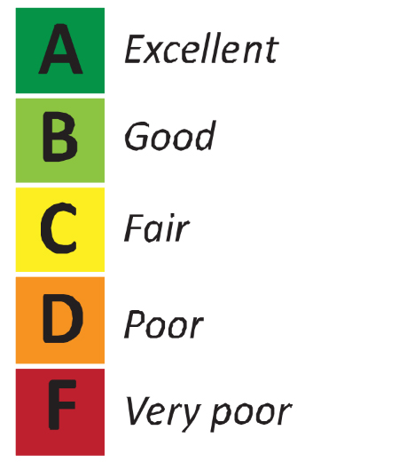

Web usability testing : Testing Sessions.
Refers to making arrangements and inviting people for testing, a test session should:
- Have a facilitator that informs the participants what to be done and avoids answers to their questions.
-
Conduct questionnaires among the participants, asking about the level of satisfaction and provide them with options like "Poor/Satisfactory/Good/Excellent".

Image-Source
-
Ask the participant,"what is going on in their mind ?" while they look at you website and request them to answer with the first thing that entered their mind.
-
Ask the observers to find three crucial problems in the website and write it down as comments.
Things to keep in mind
-
Start as early as you can because testing along with designing eliminates problems easily.
-
Find out websites with the same motive as yours, and test for their usability, you will find some similarities among the two, try to implement good features of their websites into yours and try to avoid the mistakes they made.
-
Find testers who are not afraid to point out the problems with your creativity.
-
Donot settle with just one or two testers, as they already know way too much about the website.
-
If one person does not appreciate it does not mean it's bad,
involve more people, ask them to provide detailed reviews and act on the ones you consider useful.